Natación
la natación es una de las prácticas deportivas más populares del mundo. Aporta gran cantidad de beneficios al aparato respiratorio y circulatorio del ser humano.
Tiene beneficios tanto físicos como psíquicos para la salud, dado que es una de las prácticas deportivas más completas que se conocen, fortaleciendo la musculatura casi completa del cuerpo y estimulando la coordinación mental y la memoria.

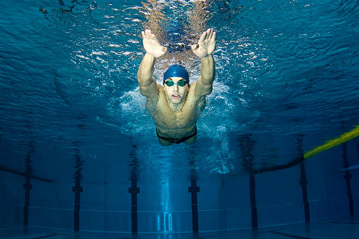
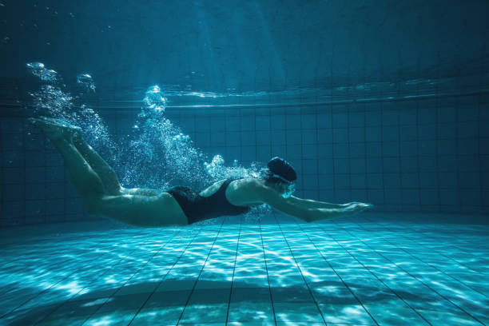
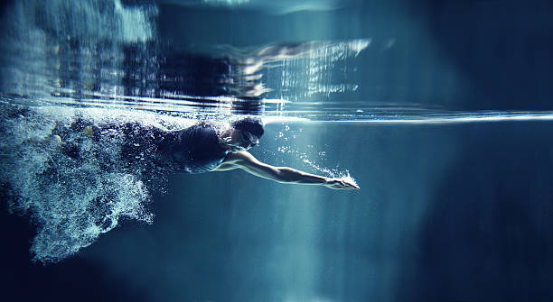
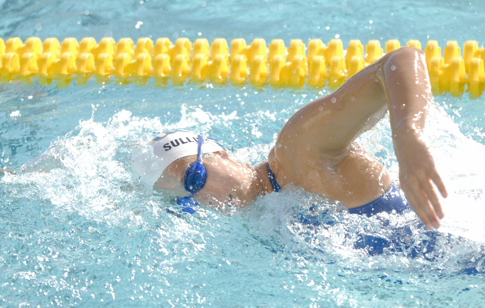
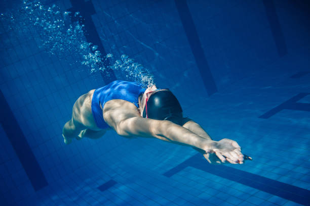
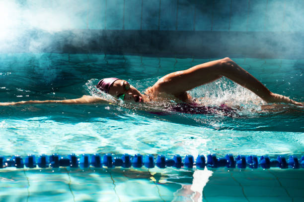

Aguas abiertas
La natación en aguas abiertas es un deporte popular que ha ido ganando adeptos en los últimos años. A diferencia de la natación en piscina, la natación en aguas abiertas tiene lugar en masas de agua naturales como lagos, ríos o el mar.
Este tipo de natación ofrece una serie de ventajas, entre ellas un mayor desafío para el nadador, así como una mejor oportunidad para experimentar y disfrutar de la naturaleza.
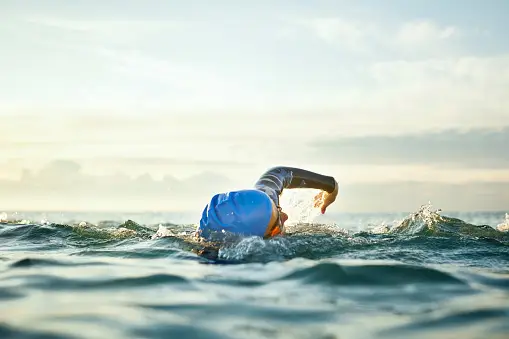


Waterpolo
El waterpolo es un deporte que se practica a nivel mundial y tal es su importancia que cuenta con equipos oficiales, forma parte de los deportes olímpicos e incluso cuenta con un campeonato mundial.
Al leer su nombre podemos intuirlo ¿cierto? El waterpolo es un deporte que se juega en el agua y que se lleva a cabo por dos equipos. Para muchos es considerado como el “futbol” del agua, y es que consiste básicamente en hacer anotaciones que al igual que en el soccer, son llamadas “gol”.

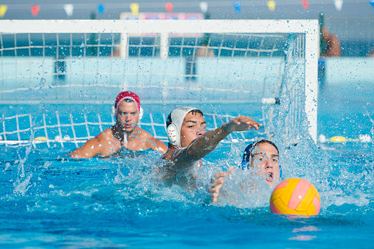

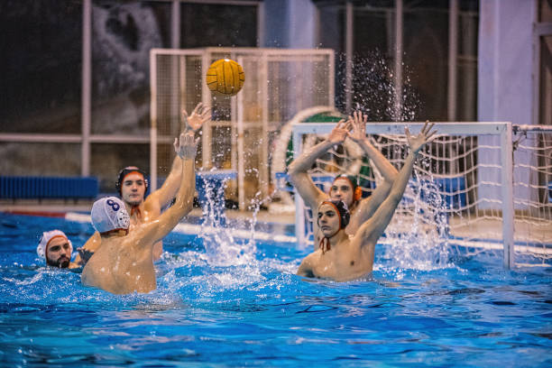


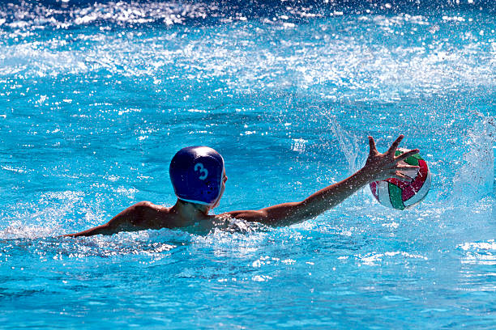

Aquagym
Aquagym es una gimnasia parecida al aeróbico, pero que se practica dentro del agua. Suele caracterizarse por sus movimientos suaves y lentos, ya que debe vencerse la resistencia del agua. De esta manera, se vuelve un deporte suave que contribuye a mantener un estilo de vida más saludable, relajar la mente, y estilizar la figura.
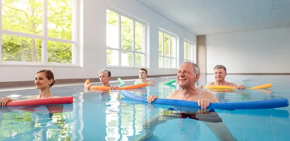


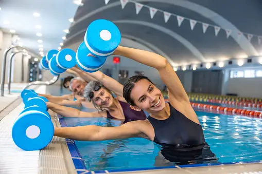